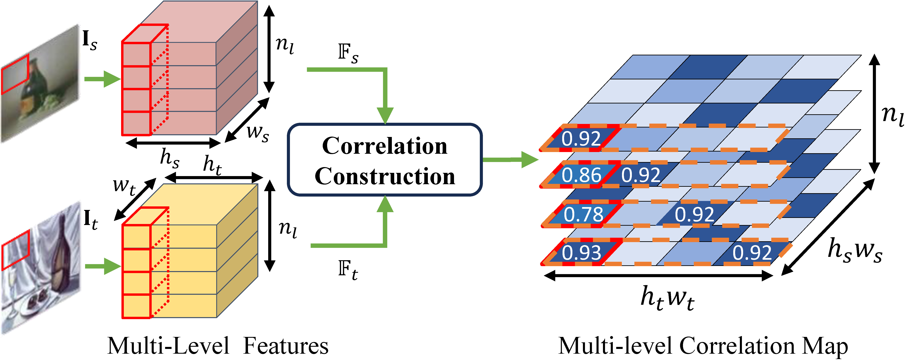
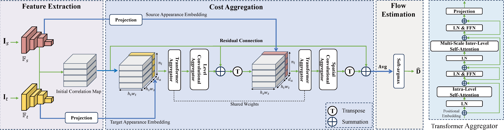
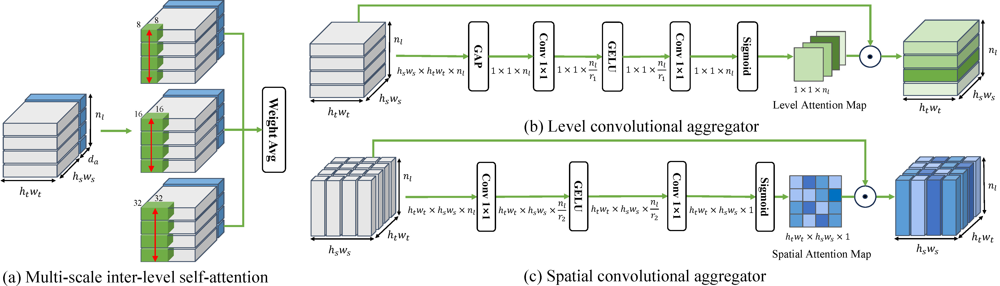
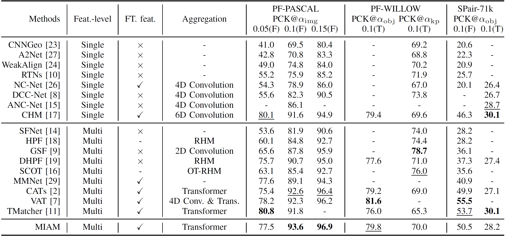
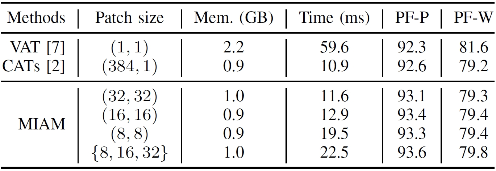
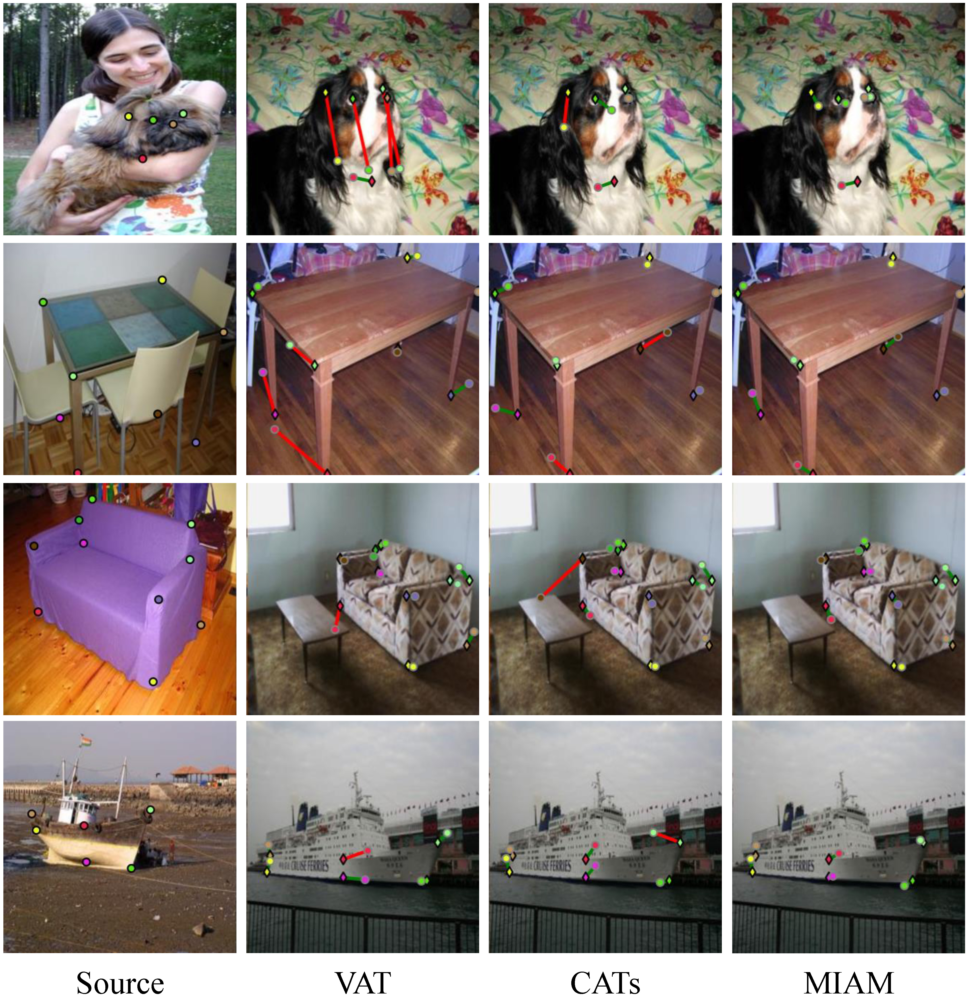

Multi-granularity Correlation Refinement for Semantic Correspondence
Zhen Liang
Enyu Che
Guoqiang Xiao
Jingwei Qu∗
Southwest University
[PDF] [Code]
Abstract
Semantic correspondence aims to establish dense correspondences between semantically similar images. Multi-level image features have been commonly used in recent studies due to their rich information. However, this approach poses a challenging problem of how to distinguish the importance of multiple similarity scores for each candidate match. Moreover, the introduction of the level dimension increases ambiguous matches. To address these challenges, we develop a Multi-granularity Inter-level Attention-based Matching (MIAM) network. Specifically, multi-scale inter-level self-attention, conditioned on correlation patches of various sizes, is proposed to adjust the effect of similarities from different levels on building correspondences. Next, we introduce a dual dimensional re-weighting strategy to further alleviate the ambiguity issue. Based on the convolutional aggregation of the multi-level scores along the spatial and level dimensions, this strategy strengthens positive matches while suppressing negative ones. In the thorough evaluation on three semantic correspondence benchmarks, MIAM achieves competitive performance compared to popular methods.
Multi-level Correlation Map
Architecture of MIAM
Multi-granularity Refinement
Quantitative Results
Comparison of PCK@ατ (%) on PF-PASCAL, PF-WILLOW, and SPair-71k. Bold and underlined numbers indicate the best and the second best performance, respectively.

Memory and run-time comparison.
Qualitative Results
Qualitative results on PF-PASCAL.
Reference
@inproceedings{liang2024multi,
|